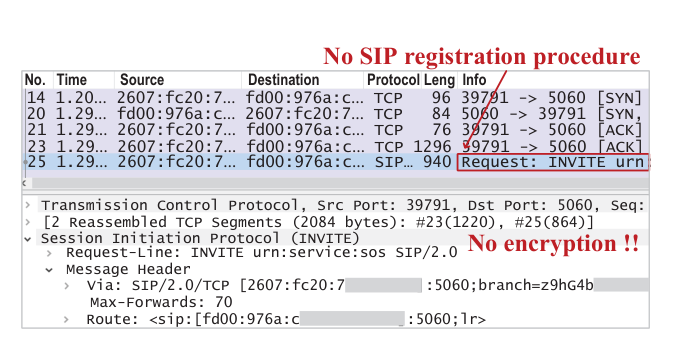
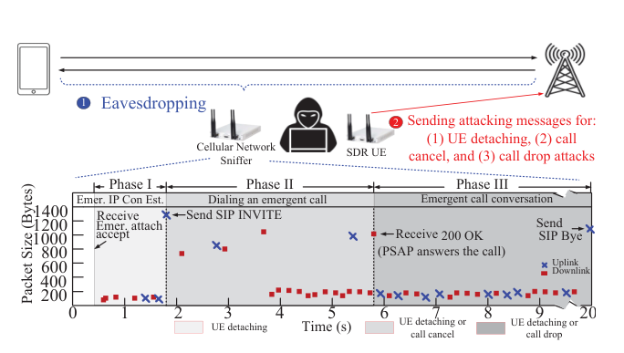
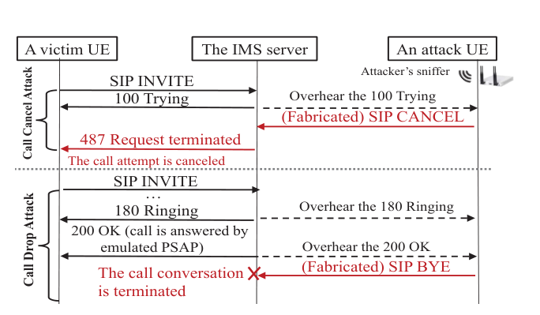
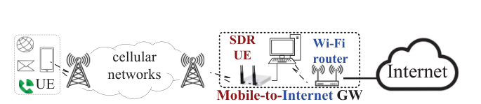
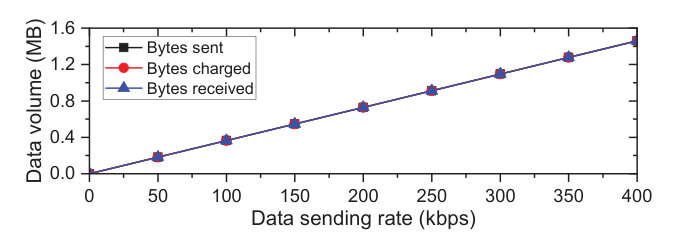

Guan-Hua (Scott) Tu
Associate Professor
Department of Computer Science and Engineering,
Michigan State University
428 S SHAW LN, ROOM 3115
East Lansing, MI 48824-1266
Email: ghtu AT msu.edu
Office: 1124 Engineering Building
Cellular Emergency (9-1-1) Service Security and Resilience
- Uncovering Insecure Designs of Cellular Emergency Services (911) [MobiCom'22, Best Community Paper Award Runner-Up, AT&T Security Award, ACM SIGMOBILE Research Highlights, ACM GetMobile Research Highlights 2023; IEEE/ACM ToN'24] (Paper)
- An unencrypted emergency call message (Observed for a commodity phone without any SIM card)
- DoCES attack (A sniffer and an SDR-based attack UE detach the victim, cancel the call, or drop the call)
- Call cancel and call drop attacks (Fabricated SIP CANCEL and SIP BYE messages)
- Free data service (An SDR-based UE serves as a Mobile-to-Internet gateway via the emergency session)
- Data DoS/overcharge attack (Spam sent, received, and charged to the victim)
- M911-Verifier: Uncovering Problematic Designs Hindering Ubiquitous Cellular Emergency Services Access [MobiCom'24; invited to brief the FCC] (Paper)
- Overview of M911-Verifier
- Problematic network selection (Preferring cellular over Wi-Fi results in minutes of emergency call setup delay)
- Subscribed phones prioritize their home carrier for dialing an emergency call, whereas anonymous phones do not
- Subscribed phones suffer longer emergency call setup times than anonymous phones
- Network escalation forbidden during emergency calls (A call dropped due to a forbidden 3G-to-4G handover)
- Proposed solution (Emergency call setup time with and without our solution)
- Media report
- MSU Today: MSU researchers identify why 911 calls are delayed, failed, or dropped (Mar. 2025)
- MSU Today: Making emergency calls more secure (Apr. 2023)
- WILX: MSU researchers awarded $1.2 million grant to fix 911 cyber security issues (Apr. 2023)
Emergency services are a vital lifeline to people in emergency conditions, and globally deployed cellular networks with ubiquitous coverage are their most accessible channel. To maximize availability, the GSMA requires emergency services to be supported for phones without a SIM card (anonymous UEs) and free of charge, 3GPP requires them to be provided with higher priority than other services, and the FCC requires carriers to deliver all wireless 9-1-1 calls to the Public Safety Answering Point (PSAP), regardless of call validation results. Prior attacks on emergency services mainly target 9-1-1 call centers or the phone side, while the security of the cellular infrastructure supporting emergency services remains unexplored. Since emergency services operate differently from conventional cellular services, and anonymous access enlarges the attack surface, do they introduce new security threats? Unfortunately, the answer is yes. In the networks of three major U.S. carriers, we discover four vulnerabilities: unverifiable emergency IP-CAN (IP Connectivity Access Network) session requests (V1), improper cross-layer security binding (V2), non-atomic cellular emergency service initialization (V3), and improper access control on emergency IP-CAN sessions (V4). By exploiting them, we devise two proof-of-concept attacks. (1) Denial of Cellular Emergency Service (DoCES), which requires only two software-defined radios serving as an attack UE and a sniffer, detaches a victim's emergency session, cancels the victim's emergency call attempt, or drops an ongoing emergency call with a PSAP. (2) Emergency IP-CAN Session Hijacking abuses the emergency session to obtain free data/voice/text services, and to bypass carriers' firewalls to inject spam that causes data denial of service or excessive data bills on victims, or to remotely scan the services running on victims' devices. All vulnerabilities and attacks were validated experimentally as practical security issues. We finally propose and prototype standard-compliant remedies, such as protecting emergency signaling with TLS and authorizing each emergency session only temporarily, with limited bandwidth, until its IMS server receives SIP messages from the UE. Our IEEE/ACM ToN'24 extension further covers six vulnerabilities across three U.S. and two Taiwanese carriers. We reported all discovered vulnerabilities to the tested carriers and provided them with standard-compliant remedies. GSMA, citing this work, revised its VoLTE Security Analysis and Recommendations to require security measures for emergency calls, and we were invited to present this research to the leadership of 3GPP SA WG3 (Security and Privacy).





Cellular networks provide the most accessible emergency (9-1-1) services with ubiquitous coverage. To keep them available to everyone, the FCC requires carriers to deliver all 9-1-1 calls to a Public Safety Answering Point (PSAP), whether or not the caller is their subscriber, and 3GPP allows phones to access emergency services across heterogeneous networks: 5G/4G/3G base stations, Wi-Fi, and different carriers. However, this comprehensive support is a double-edged sword. The network functions involved are numerous and interact in complex ways, making emergency services prone to errors, yet these emergency-specific designs remain largely unexplored. We develop M911-Verifier, the first emergency-specific model checking tool for uncovering 3GPP design flaws that lead to emergency service failures or delays. It models each protocol as a pair of finite state machines at the phone and in the network, correlates message loss with signal strength rather than using a constant loss rate, and adaptively models diverse emergency scenarios, covering stationary and mobile users, home and visited carriers, and subscribed and anonymous (SIM-less) phones. To tame state explosion across radio access technologies, network generations, and carriers, it decomposes models by procedure, loads checkers on demand, and combines verification approaches; to analyze the resulting counterexamples efficiently, we trained a machine-learning classifier on the root causes of 100 initial samples, which flags counterexamples with unseen root causes for manual inspection. M911-Verifier identifies 11 previously unreported design defects in three categories: problematic network selection for initiating emergency calls, emergency-unaware 9-1-1 call operation, and network escalation forbidden during emergency calls; nine of them were validated with three U.S. carriers and two Taiwanese carriers using commodity smartphones. The findings are counterintuitive: despite sufficient wireless coverage, emergency calls may take minutes to connect, fail, or drop, and can perform far worse than regular calls. For example, because 3GPP prohibits emergency calls over Wi-Fi whenever any cellular network is available, 90% of indoor emergency calls failed to reach PSAPs within two minutes at locations with weak cellular but good Wi-Fi signals, while non-emergency calls connected in just 5.85 seconds. Because subscribed phones must prioritize their home carrier for emergency services, paying subscribers may take over a minute to connect, while phones without a SIM card can use any carrier and connect in about four seconds. We propose standards-compliant solutions, namely non-prioritized network selection, an emergency-aware NAS protocol, and unrestricted handover for call continuity, and our prototype reduces emergency call setup times from over a minute to about four seconds. All experiments were conducted responsibly: no emergency call was ever delivered to a PSAP.